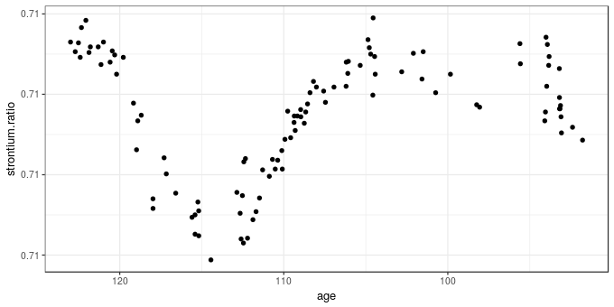
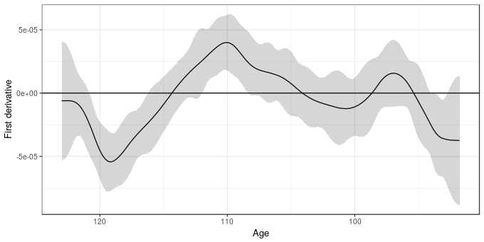
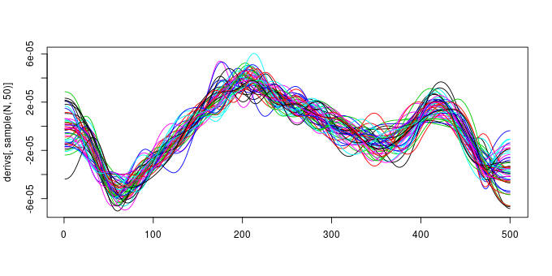

Simultaneous intervals for derivatives of smooths revisited
Posted in
Tagged
GAM models smooths derivatives simultaneous interval confidence interval statistical modelling
Eighteen months ago I screwed up! I’d written a post in which I described the use of simulation from the posterior distribution of a fitted GAM to derive simultaneous confidence intervals for the derivatives of a penalized spline. It was a nice post that attracted some interest. It was also wrong. In December I corrected the first part of that mistake by illustrating one approach to compute an actual simultaneous interval, but only for the fitted smoother. At the time I thought that the approach I outlined would translate to the derivatives but I was being lazy then Christmas came and went and I was back to teaching — you know how it goes. Anyway, in this post I hope to finally rectify my past stupidity and show how the approach used to generate simultaneous intervals from the December 2016 post can be applied to the derivatives of a spline.
If you haven’t read the December 2016 post I suggest you do so as there I explain this:
\[ \begin{align} \mathbf{\hat{f}_g} &\pm m_{1 - \alpha} \begin{bmatrix} \widehat{\mathrm{st.dev}} (\hat{f}(g_1) - f(g_1)) \\ \widehat{\mathrm{st.dev}} (\hat{f}(g_2) - f(g_2)) \\ \vdots \\ \widehat{\mathrm{st.dev}} (\hat{f}(g_M) - f(g_M)) \\ \end{bmatrix} \end{align} \]
This equation states that the critical value for a 100(1 - \(\alpha\))% simultaneous interval is given by the 100(1 - \(\alpha\))% quantile of the distribution of the standard errors of deviations of the fitted values from the true values of the smoother. We don’t know this distribution, so we generated realizations from it using simulation, and used the empirical quantiles of the simulated distribution to give the appropriate critical value \(m\) with which to calculate the simultaneous interval. In that post I worked my way through some R code to show how you can calculate this for a fitted spline.
To keep this post relatively short, I won’t rehash the discussion of the code used to compute the critical value \(m\). I also won’t cover in detail how these derivatives are computed. We use finite differences and the general approach is explained in an older post. I don’t recommend you use the code in that post for real data analysis, however. Whilst I was putting together this post I re-wrote the derivative code as well as that for computing point-wise and simultaneous intervals and started a new R package tsgam. tsgam is is available on GitHub and we’ll use it here. Note this package isn’t even at version 0.1 yet, but the code for derivatives and intervals has been through several iterations now and works well whenever I have tested it.
Assuming you have the devtools package installed, you can install tsgam using
devtools::install_github("gavinsimpson/tsgam")As example data, I’ll again use the strontium isotope data set included in the SemiPar package, and which is extensively analyzed in the monograph Semiparametric Regression (Ruppert et al., 2003). First, load the packages we’ll need as well as the data, which is data set fossil. If you don’t have SemiPar installed, install it using install.packages("SemiPar") before proceeding
library("mgcv") # fit the GAM
library("tsgam") # code for derivatives & intervals
library("ggplot2") # package for nice plots
theme_set(theme_bw()) # simpler theme for the plots
data(fossil, package = "SemiPar") # load the dataThe fossil data set includes two variables and is a time series of strontium isotope measurements on samples from a sediment core. The data are shown below using ggplot()
ggplot(fossil, aes(x = age, y = strontium.ratio)) +
geom_point() + scale_x_reverse()
The aim of the analysis of these data is to model how the measured strontium isotope ratio changed through time, using a GAM to estimate the clearly non-linear change in the response. As time is the complement of sediment age, we should probably model this on that time scale, especially if you wanted to investigate residual temporal auto-correlation. This requires creating a new variable negAge for modelling purposes only
fossil <- transform(fossil, negAge = -age)As per the previous post a reasonable GAM for these data is fitted using mgcv and gam()
m <- gam(strontium.ratio ~ s(negAge, k = 20), data = fossil, method = "REML")Having fitted the model we should do some evaluation of it but I’m going to skip that here and move straight to computing the derivative of the fitted spline and a simultaneous interval for it. First we set some constants that we can refer to throughout the rest of the post
## parameters for testing
UNCONDITIONAL <- FALSE # unconditional or conditional on estimating smooth params?
N <- 10000 # number of posterior draws
n <- 500 # number of newdata values
EPS <- 1e-07 # finite differenceTo facilitate checking that this interval has the correct coverage properties I’m going to fix the locations where we’ll evaluate the derivative, calculating the vector of values to predict at once only. Normally you wouldn’t need to do this just to compute the derivatives and associated confidence intervals — you would just need to set the number of values n over the range of the predictors you want — and if you have a model with several splines it is probably easier to let tsgam handle this part for you.
## where are we going to predict at?
newd <- with(fossil, data.frame(negAge = seq(min(negAge), max(negAge), length = n)))The fderiv() function in tsgam computes the first derivative of any splines in the supplied GAM1 or you can request derivatives for a specified smooth term. As we have only a single smooth term in the model, we simply pass in the model and the data frame of locations at which to evaluate the derivative
fd <- fderiv(m, newdata = newd, eps = EPS, unconditional = UNCONDITIONAL)(we set eps = EPS, so we have the same grid shift later in the post when checking coverage properties, and don’t account for the uncertainty due to estimating the smoothness parameters (unconditional = FALSE), normally you can leave these at the defaults). The object returned by fderiv()
str(fd, max = 1)
List of 6
$ derivatives :List of 1
$ terms : chr "negAge"
$ model :List of 52
..- attr(*, "class")= chr [1:3] "gam" "glm" "lm"
$ eps : num 1e-07
$ eval :'data.frame': 500 obs. of 1 variable:
$ unconditional: logi FALSE
- attr(*, "class")= chr "fderiv"
contains a component derivatives that contains the evaluated derivatives for all or the selected smooth terms. The other components include a copy of the fitted model and some additional parameters that are required for the confidence intervals. Confidence intervals for the derivatives are computed using the confint() method. The type argument specifies whether point-wise or simultaneous intervals are required. For the latter, the number of simulations to draw is required via nsim
set.seed(42) # set the seed to make this repeatable
sint <- confint(fd, type = "simultaneous", nsim = N)To make it easier to work with the results I wrote the confint() method so that it returned the confidence interval as a tidy data frame suitable for plotting with ggplot2. sint is a data frame with an identifier for which smooth term each row relates to (term), plus columns containing the estimated (est) derivative and the lower and upper confidence interval
head(sint)
term lower est upper
1 negAge -0.000053 -6.1e-06 0.000041
2 negAge -0.000053 -6.1e-06 0.000041
3 negAge -0.000053 -6.1e-06 0.000040
4 negAge -0.000052 -6.1e-06 0.000040
5 negAge -0.000052 -6.1e-06 0.000040
6 negAge -0.000051 -6.0e-06 0.000039
The estimated derivative plus its 95% simultaneous confidence interval are shown below
ggplot(cbind(sint, age = -newd$negAge),
aes(x = age, y = est)) +
geom_hline(aes(yintercept = 0)) +
geom_ribbon(aes(ymin = lower, ymax = upper), alpha = 0.2) +
geom_line() +
scale_x_reverse() +
labs(y = "First derivative", x = "Age")
So far so good.
Having thought about how to apply the theory outlined in the previous post, it seems that all we need to do to apply it to derivatives is to make the assumption that the estimate of the first derivative is unbiased and hence we can proceed as we did in the previous post by computing BUdiff using a multivariate normal with zero mean vector and the Bayesian covariance matrix of the model coefficients. Where the version for derivatives differs is that we use a prediction matrix for the derivatives instead of for the fitted spline. This prediction matrix is created as follows
- generate a prediction matrix from the current model for the locations in
newd, - generate a second prediction matrix as before but for slightly shifted locations
newd + eps - difference these two prediction matrices yielding the prediction matrix for the first differences
Xp - for each smooth in turn
- create a zero matrix,
Xi, of the same dimensions as the prediction matrices - fill in the columns of
Xithat relate to the current smooth using the values of the same columns fromXp - multiply
Xiby the vector of model coefficients to yield predicted first differences - calculate the standard error of these predictions
- create a zero matrix,
The matrix Xi is supplied for each smooth term in the derivatives component of the object returned by fderiv().
Once I’d grokked this one basic assumption about the unbiasedness of the first derivative, the rest of the translation of the method to derivatives fell into place. As we are using finite differences, we may be a little biased in estimating the first derivatives, but this can be reduced by makes eps smaller, thought the default probably suffices.
To see the detail of how this is done, look at the source code for tsgam:::simultaneous, which apart from a bit of renaming of objects follows closely the code in the previous post.
Having computed the purported simultaneous interval for the derivatives of the trend, we should do what I didn’t do in the original posts about these intervals and go and look at the coverage properties of the generated interval.
To do that I’m going to simulate a large number, N, of draws from the posterior distribution of the model. Each of these draws is a fitted spline that includes the uncertainty in the estimated model coefficients. Note that I’m not including a correction here for the uncertainty due to smoothing parameters being estimated — you can set unconditional = TRUE throughout (or change UNCONDITIONAL above) to include this extra uncertainty if you wish.
Vb <- vcov(m, unconditional = UNCONDITIONAL)
set.seed(24)
sims <- MASS::mvrnorm(N, mu = coef(m), Sigma = Vb)
X0 <- predict(m, newd, type = "lpmatrix")
newd <- newd + EPS
X1 <- predict(m, newd, type = "lpmatrix")
Xp <- (X1 - X0) / EPS
derivs <- Xp %*% t(sims)The code above basically makes a large number of draws from the model posterior and applies the steps of the algorithm outlined above to generate derivs, a matrix containing 10000 draws from the posterior distribution of the model derivatives. Our simultaneous interval should entirely contain about 95% of these posterior draws. Note that a draw here refers to the entire set of evaluations of the first derivative for each posterior draw from the model. The plot below shows 50 such draws (lines)
set.seed(2)
matplot(derivs[, sample(N, 50)], type = "l", lty = "solid")
and 95% of the 10000 draws (lines) should lie entirely within the simultaneous interval if it has the right coverage properties. Put the other way, only 5% of the draws (lines) should ever venture outside the limits of the interval.
To check this is the case, we reuse the the inCI() function that checks if a draw lies entirely within the interval or not
inCI <- function(x, upr, lwr) {
all(x >= lwr & x <= upr)
}As each column of derivs contains a different draw, we want to apply inCI() to each column in turn
fitsInCI <- with(sint, apply(derivs, 2L, inCI, upr = upper, lwr = lower))inCI() returns a TRUE if all the points that make up the line representing a single posterior draw lie within the interval and FALSE otherwise, therefore we can sum up the TRUEs (recall that a TRUE == 1 and a FALSE == 0) and divide by the number of draws to get an estimate of the coverage properties of the interval. If we do this for our interval
sum(fitsInCI) / length(fitsInCI)
[1] 0.95
we see that the interval includes 95% of the 10000 draws. Which, you’ll agree is pretty close to the desired coverage of 95%.
That’s it for this post; whilst the signs are encouraging that these simultaneous intervals have the required coverage properties, I’ve only looked at them for a simple single-term GAM, and only for a response that is conditionally distributed Gaussian. I also haven’t looked at anything other than the coverage at an expected 95%. If you do use this in your work, please do check that the interval is working as anticipated. If you do discover problems, please let me know either in the comments below or via email. The next task is to start thinking about extending these ideas to work with a wider range of GAMs that mgcv can fit, include location-scale models and models with factor-smooth interactions.
References
References
Footnotes
fderiv()currently works for smooths of a single variable fitted usinggam()orgamm(). It hasn’t been tested with the location-scale extended families in newer versions of mgcv and I doubt it will work with them currently. ↩︎